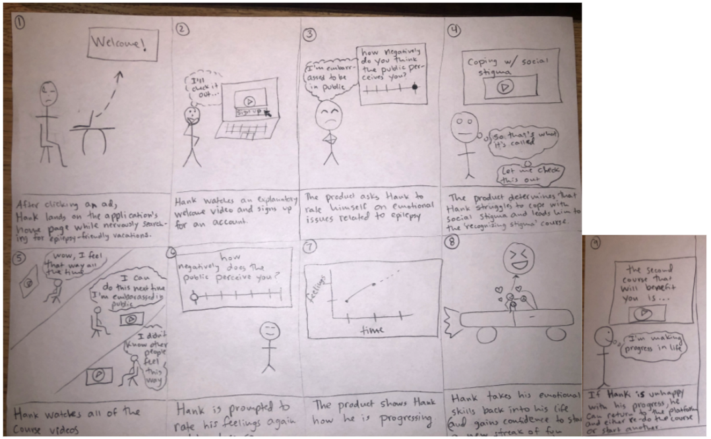
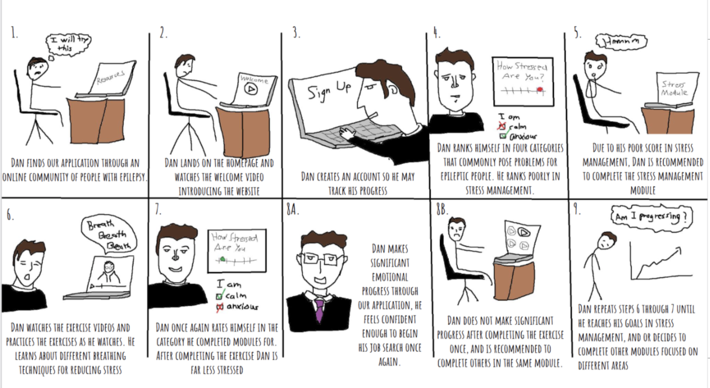
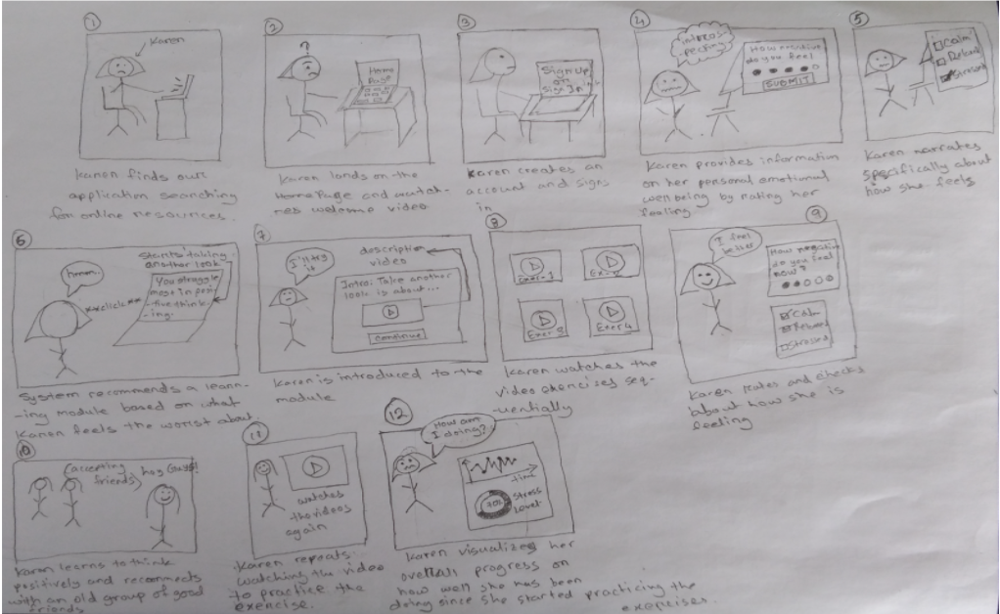
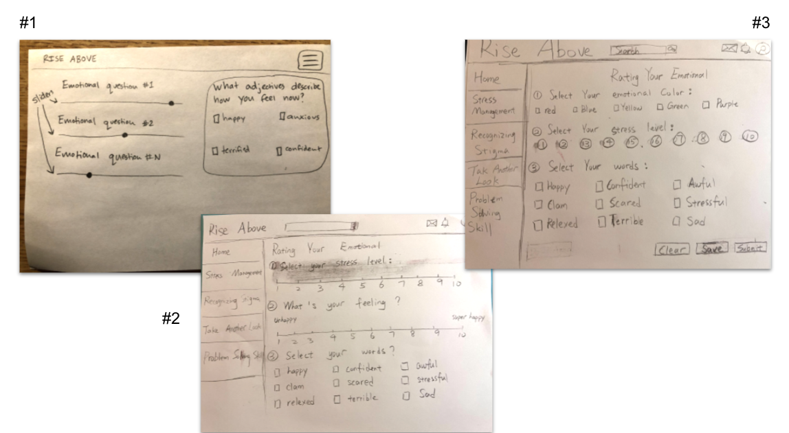

Storyboards
Hank Storyboard

Dan Storyboard

Karen Storyboard

Interface Design Options

We chose option number two because:
- The sliders for emotional ratings allow the most freedom, and therefore provide more information, from the user.
- The navigatable sidebar on each page will allow the user to easily reach content from any module.
UI Screens
Hank
Dan
Karen